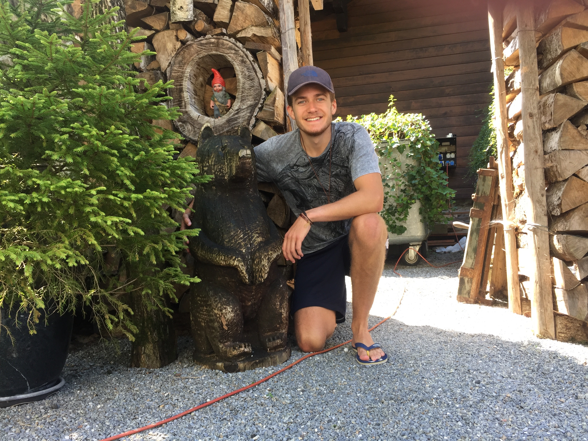

Home
Home Résumé
Résumé  Contact
ContactAbout me
My name is James Hannigan. I am currently studying Computer Science at the University of Kent, in England. I am half English and half Irish.
Since a very young age my interest for technology grew very quickly. Now I am at university learning about my interest.
Fortunately, my hard work during school paid off and I secured myself at a high ranking university. During my first year at university I had a full two terms of learning Java. I also had the privilege of learning web development languages such as; HTML, CSS, JavaScript, MySQL and PHP.
In my own time, I have taken apart hardware, made animations, illustrations, videos, software and websites.
Unrelated to my aspirations I also take part in sport, I regularly go to the gym, swimming training and play basketball. This is all an attempt to keep up a healthy lifestyle.
When I am not using my time productively, I like to relax by watching movies, television shows and playing video games. I am also a very sociable person and enjoy spending time with my family and friends.
To read more about my professional life please refer to the Résumé page on this website.
Please scroll to read more